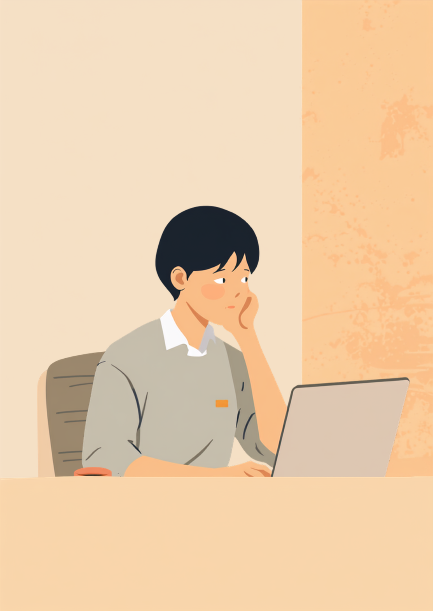
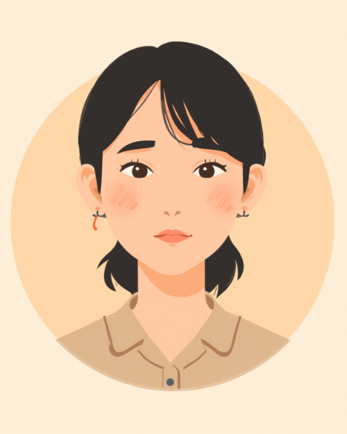

上司や同僚からのちょっとした指摘が、その日一日ずっと頭から離れない。相手はもう忘れているような些細な一言なのに、自分だけ何時間も、時には何日も引きずってしまう。ADHDのある方の中には、こうした「拒否や指摘に人一倍敏感に反応しやすい」特性を持つ方がいるとされています。この記事では、その特性の背景と、職場でできる具体的な工夫を当事者の声をもとに整理しました（2026年8月時点の情報です）。
PR



「さっきの言い方、まずかったかな」が頭の中で何度も再生される
「ここ直しておいて」のひと言が、なぜ一日中頭から離れないのか

ADHDのある方の中には、否定や拒否と受け取れる言葉に人一倍強く反応しやすい傾向を持つ方がいるとされています。「気にしすぎ」ではなく、そう感じやすい特性がある、というだけのことです。まめざる
就労支援の現場で関わってきた中で、ADHDのある方からよく聞く悩みのひとつに「注意されたことを一日中引きずってしまう」というものがあります。内容自体はごく軽微な指摘、たとえば「ここの数字、直しておいてね」程度のものでも、頭の中では何度も同じ場面が再生され、仕事に集中できなくなってしまうというのです。
本人としては、指摘してきた相手にはもう他意がないと分かっていても、感情の反応が追いつかないという感覚があるようです。拒否や否定に敏感に反応しやすい特性は、海外ではRSD（Rejection Sensitive Dysphoria）と呼ばれることがあり、ADHDに伴いやすい傾向のひとつとして紹介されることがあります。ただし2026年8月時点で、日本の診断基準に正式な病名として定められているものではない点には注意が必要です。
!
この記事で紹介する内容は、ADHDのある方に見られることがある傾向の一例です。感じ方の強さや現れ方には個人差があり、すべての方に当てはまるわけではありません。つらさが続く場合は、自己判断せず医療機関にご相談ください。
「正直に言うと、先輩に『ここのリンク切れてますよ』って一言だけ言われただけなのに、その日はずっと仕事にならなかったです。頭の中で『やっぱり向いてないのかな』『また迷惑かけた』って同じ場面が何回も再生されて、定時後もコンビニの前でボーっと突っ立ってました。次の日には先輩はもう覚えてないくらいの些細な指摘だったのに、私だけ3日くらい引きずってたと思います。」
20代・女性（ADHD・Web制作会社勤務）
性格が弱いわけじゃない、拒否や指摘に敏感に反応しやすい特性のこと
こうした反応の強さは、しばしば「打たれ弱い」「気にしすぎ」という言葉で片づけられがちです。しかし本人の努力や心構えの問題というより、感情の反応そのものが強く出やすい特性として理解した方が実態に近い場合があるとされています。指摘された内容の重さと、頭の中で感じる重さが釣り合わなくなるようなイメージです。
指摘そのものの大きさと、感情として受け取る大きさが釣り合わなくなる
実際に、日々の体験としてこうした傾向を綴っているブログもあります。詳しい体験を知りたい方はこちらの体験記（外部サイト）も参考になるかもしれません。
「営業成績の会議で『ここ、もう少し詰めれば良かったね』って上司にサラッと言われただけで、家に帰ってからも上の空でした。妻に『今日どうしたの』って聞かれても『別に』としか言えなくて、不機嫌なわけじゃないんですけど、頭の中で反省会がずっと終わらない感じでした。半年くらい前にADHDの診断を受けていたので、あとから『これも特性のひとつかもしれない』と知って、少し気持ちが楽になりました。」
30代・男性（ADHD・営業職）
相談の一コマ

相談者
ちょっと注意されただけなのに、一日中それしか考えられなくなるんです。自分の心が弱いだけなんでしょうか。
まめざる
心が弱いというより、ADHDの特性として拒否や否定に人一倍敏感に反応しやすい傾向があるとされています。決して珍しいことではないんですよ。
相談者
そうなんですね…性格の問題だと思って、ずっと自分を責めてました。
まめざる
まずは「反応の強さ自体が特性かもしれない」と知っておくだけでも違います。このあと、その場でできる工夫も一緒に見ていきましょう。
HSPとの違いと、「気にしすぎ」と言われるつらさ
この特性は、しばしばHSP（Highly Sensitive Person）と混同されることがあります。HSPは生まれ持った気質を表す心理学的な概念とされ、ADHDは医学的な診断がつく発達障害です。どちらも刺激や指摘に敏感に反応しやすいという点は似ていますが、背景にある特性や対処のアプローチが異なる場合があるとされています。両方の傾向を併せ持つと感じる方もいるようです。
i
「HSPかADHDか」を自分で厳密に切り分ける必要はありません。大切なのは、自分がどんな場面で反応が強く出やすいかを知り、そこに合わせた工夫を見つけていくことだとされています。
厄介なのは、この反応の強さを職場で説明しにくいという点です。「そんなに気にしなくていいのに」と言われても、感情の反応は本人の意思でコントロールしきれるものではないことが多く、「気にしないようにする」という助言自体が届きにくい場合があります。かといって毎回説明するのも疲れるため、黙って抱え込んでしまう方も少なくないようです。
その場でできる工夫と、頼れる相談先
反応が強く出たときにできること
感情の反応そのものを止めることは難しくても、その場での対処によって引きずる時間を短くできる場合があるとされています。
- 可能であれば一度席を外し、数分だけ物理的に距離を取る
- 気になったことをメモに書き出し、頭の外に出す
- 「今日はここまで」と時間を区切って、続きは翌日に持ち越す
- 信頼できる人に「ちょっと今、気にしてしまって」とだけ伝えてみる
職場に説明するときも、特性の名前や仕組みまで話す必要はありません。「指摘はありがたいのですが、文章やメモにしていただけると受け止めやすいです」など、対応してほしいことに絞って伝える方法が助けになる場合があります。まめざる
頼れる相談先
- 精神科・心療内科（症状や特性についての相談、必要に応じた治療）
- 職場に選任されている産業医（50人以上の事業場に選任義務あり）
- 就労移行支援事業所（特性理解を踏まえた働き方の相談）
- 信頼できる家族や友人（感情を言葉にして外に出す相手として）
拒否や指摘への反応の強さには個人差があり、この記事の内容がそのまま当てはまるとは限りません。つらさが続く場合や仕事に支障が出ている場合は、一人で抱え込まず医療機関や支援機関にご相談ください（2026年8月時点の情報です）。
一日中引きずってしまうのは、心が弱いからではありません。反応しやすい特性を知っておくだけでも、自分を責める時間は少しずつ減らせるかもしれません。
よくある質問
Q. ADHDの「拒否に敏感」な特性は、正式な病名なのですか？
「拒否や否定に人一倍敏感に反応しやすい」傾向は、海外ではRSD（Rejection Sensitive Dysphoria、拒絶感受性亢進など）と呼ばれることがありますが、2026年8月時点で日本の診断基準に正式な病名として定められているものではないとされています。ADHDに伴いやすい特性の一つとして紹介されることが多い概念です。気になる場合は自己判断せず、医療機関にご相談ください。
Q. HSPと何が違うのですか？
HSPは生まれ持った気質を表す心理学的な概念で、ADHDは医学的な診断がつく発達障害です。どちらも刺激や指摘に敏感に反応しやすいという点は似ていますが、背景にある特性や対処のアプローチが異なる場合があります。両方の傾向を併せ持つと感じる方もいるとされています。
Q. 仕事中に注意されて動揺したとき、その場でどうすればいいですか？
その場ですぐに気持ちを切り替えようとしなくても大丈夫だとされています。可能であれば一度席を外す、水を飲む、深呼吸をするなど、数分だけ物理的に距離を取る方法が助けになる場合があります。無理に「気にしない」と自分に言い聞かせるより、反応が落ち着くのを待つ姿勢の方が楽になることもあるようです。
Q. この特性を職場にどう説明すればいいですか？
特性の名称や仕組みまで詳しく説明する必要はないとされています。「指摘はありがたいのですが、少し文章やメモにしていただけると受け止めやすいです」など、業務でどう対応してほしいかという具体的な希望に絞って伝える方法が助けになる場合があります。
Q. 一日中引きずってしまう状態が続くとき、誰に相談すればいいですか？
つらさが長く続いたり、仕事や生活に支障が出ていると感じたりする場合は、一人で抱え込まず精神科や心療内科、就労移行支援事業所などに相談することをお勧めします。特性への理解を深めながら、働き方を一緒に整理していく方法もあります。
この4点を頭に置いておくだけで、少し気持ちが軽くなるかもしれません
PR


一人で抱え込む前に、今の気持ちを話してみませんか
「まだ迷っている」段階でも大丈夫です。mimemimeの無料相談は、今の状況の整理から一緒に始められます。
無料で話してみる
おのざる
mimemime代表。就労支援の現場経験をもとに、障がいのある方の働く不安に寄り添う記事を執筆。